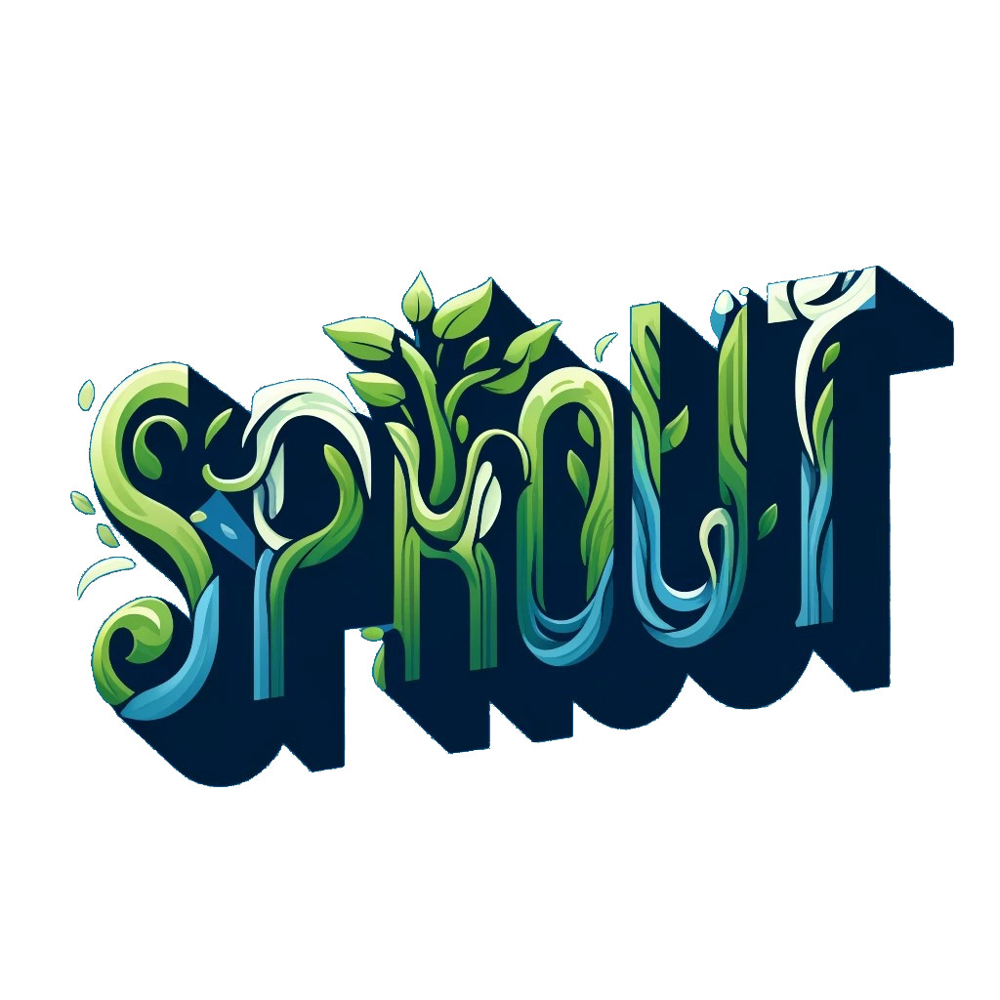

My Teaching Activities
I am a researcher at the Department of Botany, Charles University, dedicated to providing students with knowledge and skills in reproducible, open, and collaborative science. My courses are designed to foster teamwork skills, critical thinking, and innovative research methodologies.
Mentoring
Are you a student at the Department of Botany struggling with the complexities of ecological data? I’m here to assist you in analysing ecological data for your project.
Courses I currently teach
SPROuT – Science Powered through Reproducibility, Openness, and Teamwork 
Description
SPROuT is a five-day, hands-on workshop focused on mastering the principles of reproducibility, openness, and teamwork in scientific research.
Designed for master’s and PhD students, the course offers a practical and engaging approach to building modern research workflows using R, Git/GitHub, and Quarto.
Participants will learn how to organise their projects efficiently, write clean and reproducible code, manage their work with version control, collaborate effectively within research teams, and publish transparent, reproducible results. Through interactive group-based sessions in RStudio, students will gain the confidence to apply Open Science practices in their own research—making their work more robust, collaborative, and shareable.
🗓️ Date: 26–30 January 2026 (10:00–16:00)
📍 Location: Seminarium, Department of Botany
🎓 Credits: 3 ECTS
💻 Format: Practical, group-based sessions in RStudio (bring your own laptop)
🎯 Course Code: 
Daily Themes
- Organise – Set up your project structure, manage your environment, and learn the principles of Open Science.
- Analyse – Write readable, reproducible, scalable R code with good coding etiquette.
- Save – Implement version control with Git/GitHub to track, protect, and manage your research.
- Collaborate – Learn to work in teams using GitHub for transparent project collaboration.
- Publish – Communicate and share your research openly.
Expected Learning Outcomes
- Understand the principles of Open Science 🌐 and reproducibility ♻️.
- Apply best practices for data and project organisation 🗂️.
- Use Git/GitHub for version control 📚.
- Manage projects and collaborate using GitHub 🧑💼.
- Create reproducible reports using Quarto 📜.
- Share research openly following FAIR principles and modern publishing standards 🔓.
Advertisements


Science School on Quantitative Ecology
More info on the project’s websites.
Description
An intensive five-day international workshop designed for master’s and motivated PhD students. It provides hands-on training in statistical modelling 📊, computational techniques 💻, and data analysis. The workshop alternates between the Czech Republic and Germany, offering a dynamic learning environment led by lecturers from Charles University, the University of Bayreuth, and guest experts 🌟.
Expected Learning Outcomes
- Gain expertise in statistical modelling and data analysis for ecological datasets 📈.
- Participate in hands-on projects led by esteemed lecturers and guest experts 👨🏫👩🏫.
- Network with peers and experts through formal and informal sessions 🗣️.
- Learn contemporary methods and concepts in Quantitative Ecology 🌿.
SIS Course Code: 
CodeFest - Innovating Together for a Better University Environment
Description
CodeFest is a three-day workshop 💻 where master’s and PhD students collaborate to develop tools 🛠️ that enhance the university’s educational and environmental framework. Participants will engage in team projects 👥 with roles in design, project management, and documentation, promoting creativity and cooperation 🌟. Prior coding knowledge is not required, as an optional GitHub introduction session is offered.
🗓️Date: The date will be selected based on the participants’ availability. I will contact you after you register.
Expected Learning Outcomes
- Develop innovative solutions to improve the university environment 🌍.
- Gain experience in software development and project management 🚀.
- Learn diverse roles like project management, design 🎨, and review♻️.
SIS Course Code: